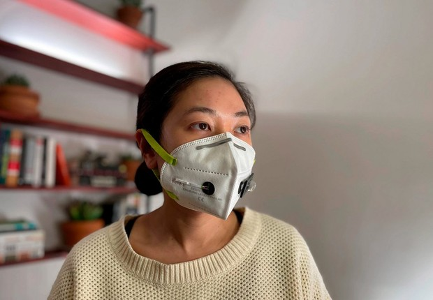
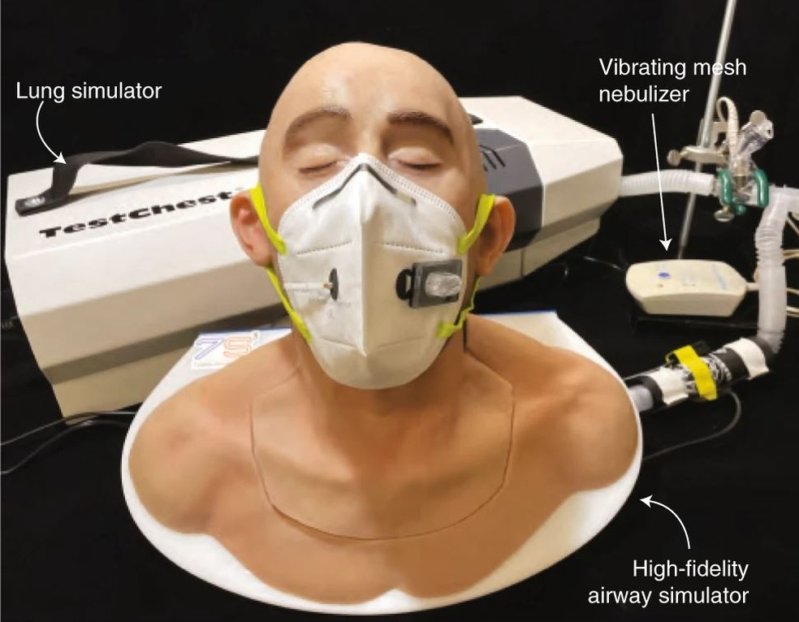
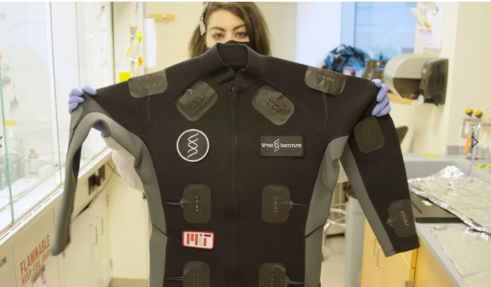

de Maringá
de MaringáNos EUA, cientistas de Harvard e MIT criam máscara capaz de detectar o Covid-19
Com tecnologia precisa, a máscara pode detectar o vírus SARS-CoV-2. O resultado sai 90 minutos após o acionamento de um botão.
A máscara desenvolvida pelos cientistas de Harvard e MIT indicam se seu portador está infectado com o vírus. Seu diagnóstico sai rapidamente após o pressionamento de um botão. Os sensores da máscara detectam partículas virais em seu hálito e respiração.
O resultado pode ser comparado ao de um teste de gravidez, com uma linha de controle e uma segunda linha indicando se há a contaminação de seu usuário; porém o resultado de seu teste é apenas exibido no lado interno da máscara.
Seus benefícios são um teste rápido, com alta precisão e baixo custo, além de garantir a privacidade de seu portador, mostrando apenas o resultado na parte interna.
Há também um protótipo de jaqueta desenvolvido pela equipe, tendo por volta de 30 sensores incorporados em poliéster e fibras sintéticas. Seus resultados podem ser observados a olho nú ou por sinais fluorescentes detectados por um espectrômetro portátil.
